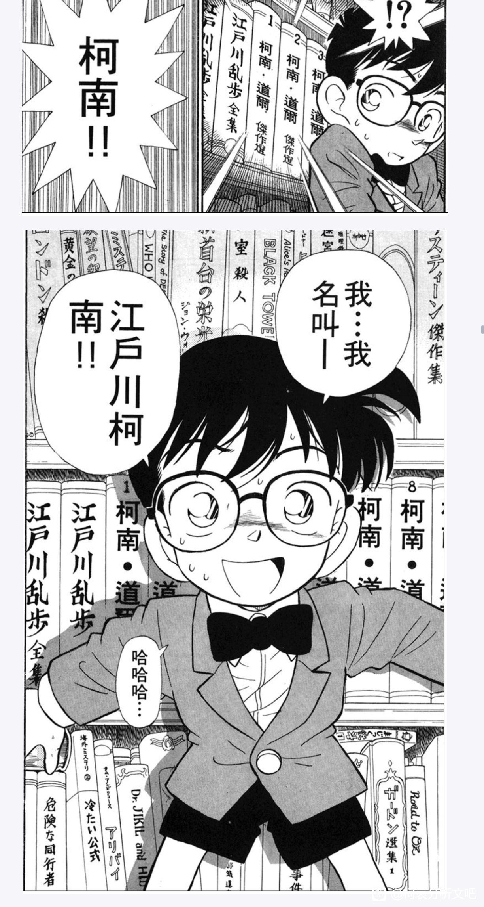
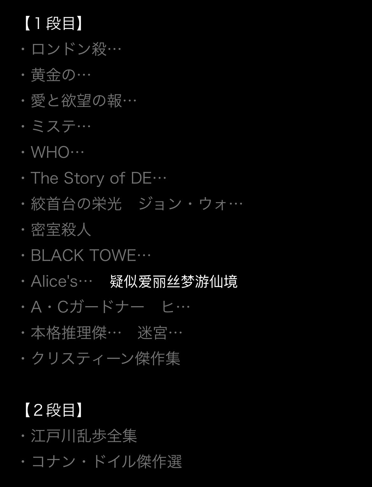
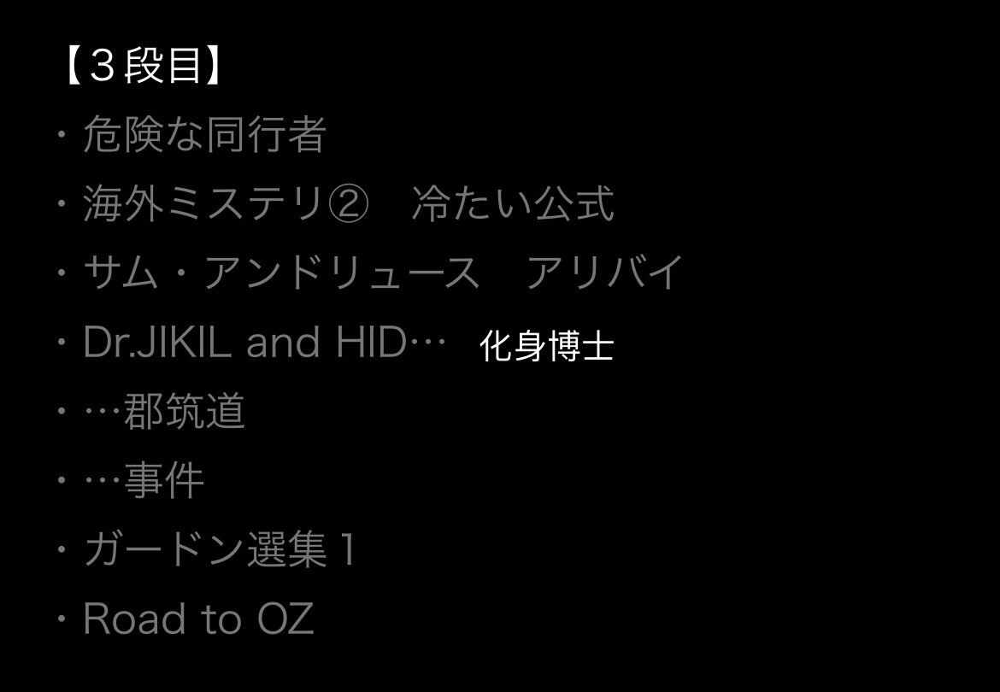
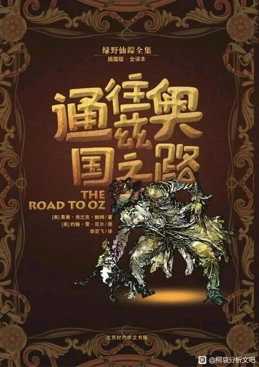
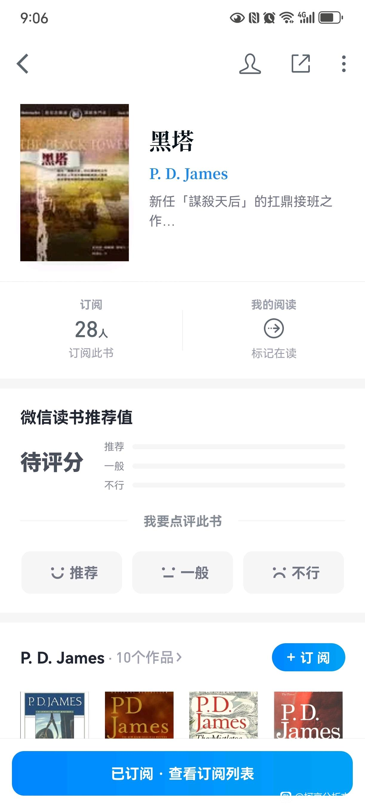

我只查到几本:第一排第一本是《伦敦杀xxx》中间是《绞首台的荣光》《黑塔》旁边可能是《爱丽丝梦游仙境》
第三排アリバイ 是不在场证明 中间横放着一本《魔术快斗》 最后是《绿野仙踪:通往奥兹国之路》
《危险な同行者》和《冷たい公式》不知道是什么
第三排アリバイ 是不在场证明 中间横放着一本《魔术快斗》 最后是《绿野仙踪:通往奥兹国之路》
《危险な同行者》和《冷たい公式》不知道是什么

我不会日语 所以有些书不知道日语名字对应的是什么书 大家有没有研究
如果中间那本的确是爱丽丝梦游仙境 也许对应的就是柯哀变小？
既然老贼把魔快当做彩蛋放在书架里 也许这些书可能也有对应暗含的意思吗 我想把这些书找来看看
蹲蹲会日语的大佬们
但是老贼自己说一开始想把柯南写成短篇，所以第一话里大概率是没伏笔的吧
2024-02-26 03:08 | 🐷亿只猪🐷:也不一定，毕竟乌鸦这个要素第一话就出现了...但是现在谁也不晓得他最初的大纲到底是啥样子的2024-02-26 08:05 | 逆光模糊了眼睛:回复 🐷亿只猪🐷 :没错 乌鸦出现在云霄飞车准备朝下行驶的那个画面我记得好像是2024-02-26 08:16 | 逆光模糊了眼睛:我也考虑过这个问题 不过我打算把能想到的可能是伏笔的地方全搜查一遍2024-02-26 23:15 | 七瓶三花月邪:宁可错杀绝不放过
回复 🐷亿只猪🐷 :因为就算是短篇，对抗的反派依然是黑组，所以一开始的琴酒伏特加甚至有点无厘头，没角时期的人设和现在的人设差别挺大的，新一没有那么嬉皮笑脸轻浮了，小兰不会随时随地暴力了，琴酒伏特加不会再有无厘头表情，但也基本不刻画他们在日常为了低调礼貌的一面了，毛利颓废的程度大大降低2024-02-27 03:40 | 逆光模糊了眼睛:回复 七瓶三花月邪 :要是能知道大概在哪个阶段决定转为长篇的话就更能针对性分析了2024-02-27 04:02 | 🐷亿只猪🐷:回复 逆光模糊了眼睛 :我只知道兰姐被削是在第四五卷2024-02-27 07:33 | 逆光模糊了眼睛:回复 🐷亿只猪🐷 :我现在一帧一帧看到第三卷了 等四和五卷我比对一下2024-02-27 08:55 | 🐷亿只猪🐷:回复 逆光模糊了眼睛 :第四卷我记得是兰姐第一次看到现场尖叫（第一话嫩血腥的她都没太大反应），第五卷开篇第一案就是裸男盲盒2024-02-27 09:41 | 逆光模糊了眼睛:然后第三卷那个游轮的案子她甚至还会跟着跑去现场
回复 🐷亿只猪🐷 :兰姐爱看别人隐私的爱好从第三卷开始就有了 就那个海上轮船凶手跟夏江是表兄妹的案子 兰姐冲进凶手房间翻看人家隐私的话 到后面看冲田的护身符2024-02-27 09:41 | 逆光模糊了眼睛:兰姐的人设从一开始就挺垮
回复 逆光模糊了眼睛 :画2024-02-27 09:43 | 🐷亿只猪🐷:回复 逆光模糊了眼睛 :还有这个细节吗，有点忘了2024-02-27 10:08 | 逆光模糊了眼睛:至少第一卷的小兰其实塑造的还不错，不理解推理也可以理解为本来存在一条从不理解到理解的成长线，但是后续被切了
回复 🐷亿只猪🐷 :第一卷其实也有点垮 新一破了案上了报纸新闻 她生气的说“都是因为你 我爸爸才没工作没案子接” 然后回了家看见小五郎喝醉乱七八糟的 她说的是“爸爸都是因为你这样才会没工作的”……就还挺无语 感觉很会pua新一老弟2024-02-27 10:09 | 逆光模糊了眼睛:回复 逆光模糊了眼睛 :她明明清楚小五郎接不上案子是因为他自己 她偏偏见了新一说的是都是因为新一2024-02-28 01:15 | 七瓶三花月邪:回复 逆光模糊了眼睛 :我猜测是第9卷或者第8卷的漫画，差不多到服部平次登场的前几话吧，因为这是第一次出现因为TV版拖剧情搞原创而不得不拖延主线人物登场，搬救兵，而设计人物也不能这么快吧
搜了搜发现有霓虹人研究过！（虽然还是没什么结果……我也感觉很多都是架空的，人名书名都搜不出结果）
除了疑似爱丽丝以外，只找到了一本确切存在的书……
除了疑似爱丽丝以外，只找到了一本确切存在的书……


2024-02-26 08:04 | 逆光模糊了眼睛:除了爱丽丝梦游仙境 我查到黑塔和通往奥兹国的路这两本真实存在 黑塔是推理小说 通往奥兹国的路是绿野仙踪的一本2024-02-27 09:44 | 🐷亿只猪🐷:我记得有个大佬分析过名柯的故事本身就是一段“爱丽丝梦游仙境”


2024-03-03 11:09 | Hchcfhcfh:黑塔的作者PD詹姆斯的另一部作品《不适合女性的工作》中的侦探科迪莉亚·格蕾，格蕾的英文是grey即黑色，是灰原的名字来源。2024-03-03 20:27 | 逆光模糊了眼睛:回复 Hchcfhcfh :让我把这本也加入我的书架2024-03-03 20:31 | Hchcfhcfh:回复 逆光模糊了眼睛 :哈哈哈哈加油加油。对啦，grey是灰色，突然发现自己打错字了

真第一集里也有这一幕，但是有些书没有保留下来
2024-02-26 21:18 | 逆光模糊了眼睛:感觉动画里未必有漫画细致 我回头再比对一下二者2024-03-03 11:10 | Hchcfhcfh:动画里和漫画里的书籍不一致